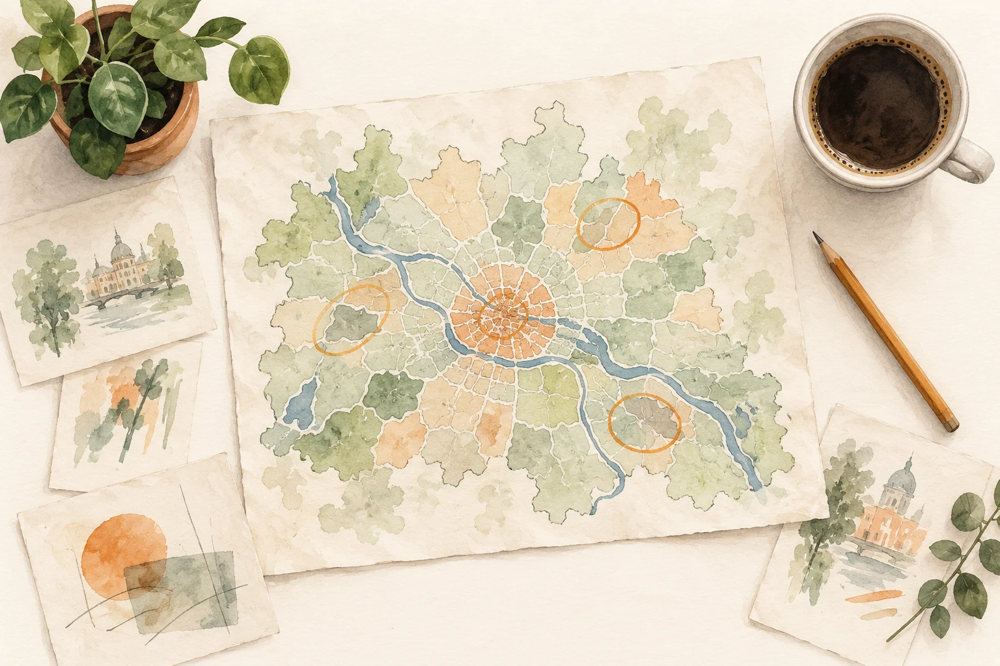
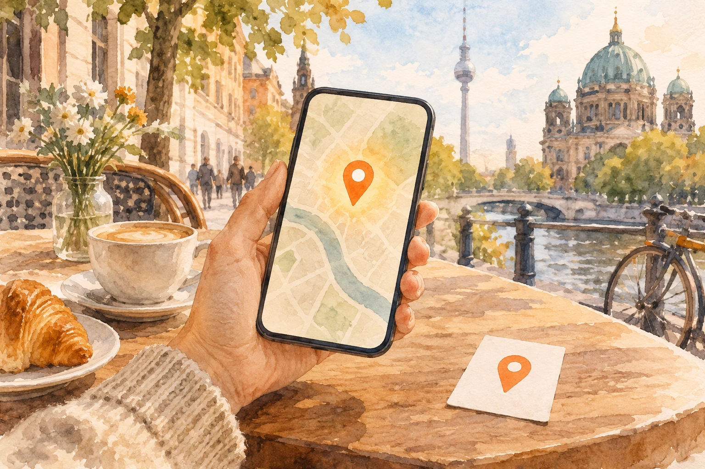
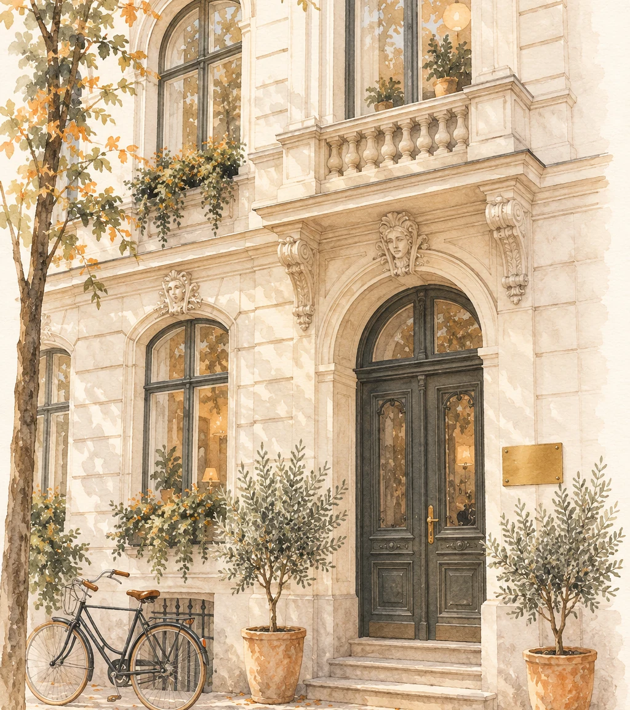

Search
Search 12 saved homes
12 saved homes Maps
Maps
 Drive-by photos
Drive-by photos Area_report_v3.pdf
Area_report_v3.pdf Shortlist_v4.xlsx
Shortlist_v4.xlsxAddress
Add an address
Start with any listing or development address.
Turn a property address into an interactive neighborhood tour your buyers can explore before a showing.
Let your buyers explore around your listing
Give your buyers a closer look at the streets, places and routes around the home.
The Gap
Buyers can see the home through photos, video, floor plans and 3D tours. But to understand the neighborhood, they still jump between Maps, listing portals, neighborhood reports, searches, spreadsheets and drive-bys. Nook brings that missing part of the listing experience into one place.
Process
Enter your listing address, then share the neighborhood tour with your buyers or embed it on your website.
Address
Start with any listing or development address.

Create
Nook turns the area around the property into an interactive, property-specific neighborhood experience.

Share
Send buyers a Nook link, embed it directly into a listing website, or share it through a QR code in print materials, signs or presentation centers.
Let your buyers explore the surrounding streets and get a feel for the walk beyond the front door.
Use Cases
Give buyers a neighborhood experience that fits the way you market property.
Send buyers a neighborhood tour with your listing so they can explore the location before a showing.

Give every agent a consistent, branded neighborhood experience to share with buyers.
Show buyers the streets, nearby places and commutes around your development before construction is complete.